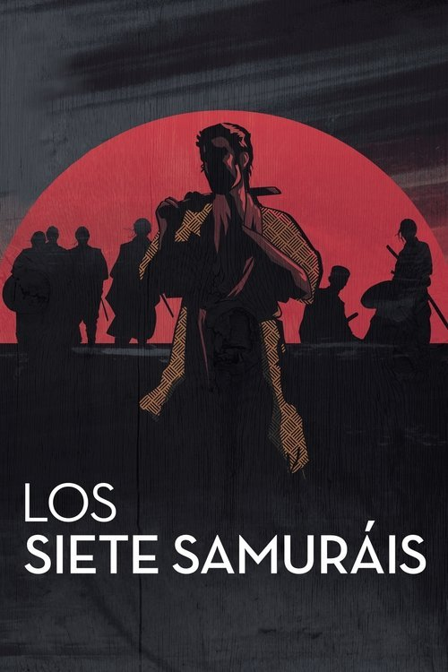

Los siete samuráis (1954)
Sinopsis Rápida
Un pueblo indefenso contrata a siete samuráis ronin para defenderlos de despiadados bandidos. ¿Triunfará el honor y la valentía frente a la abrumadora fuerza del enemigo?
Sinopsis Detallada
En un Japón feudal devastado por la guerra, un pequeño pueblo desesperado contrata a siete samuráis errantes para proteger sus cosechas de bandidos implacables. Akira Kurosawa dirige esta obra maestra épica que explora temas de honor, lealtad y el precio del sacrificio. Seguimos la formación y la posterior batalla de estos guerreros, creando una historia conmovedora y llena de acción. La película presenta una coreografía de combate impecable y una exploración profunda de las relaciones humanas en medio del caos. Más que una simple película de samuráis, es un estudio del valor, la moral y el liderazgo.
¿Por qué tenés que verla?
- Una historia épica y emocionante que te mantendrá al borde del asiento.
- La innovadora dirección de Akira Kurosawa, pionera en la cinematografía de acción y en el uso del paisaje.
- Su influencia innegable en el cine posterior, desde 'Los magníficos siete' hasta innumerables películas de acción.
- Profunda exploración del honor y la moralidad en un contexto histórico fascinante.
Idea Extra
Análisis comparativo: 'Los siete samuráis' vs. 'Los siete magníficos': Un estudio de adaptación y legado.
{{CONTENIDO_RELACIONADO}}